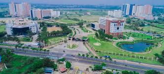
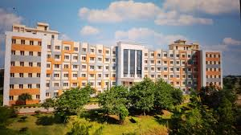

A Journey Through Time
Explore the remarkable evolution of VIT University from its humble beginnings in 1984 to its position as a global leader in education by 2025.
Divyanshu Patel
A passionate Web Developer and Digital Concept Artist, currently pursuing B.Tech in Computer Science at VIT Chennai. Skilled in frontend development, database management, and networking.
VIT University
Est. 1984
VIT Vellore
Est. 1984

VIT Chennai
Est. 2010

VIT Bhopal
Est. 2017
VIT-AP (Amaravati)
Est. 2017
VIT Bengaluru
Est. 2023